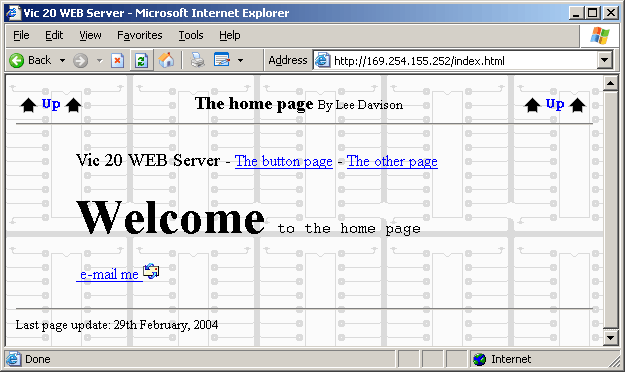
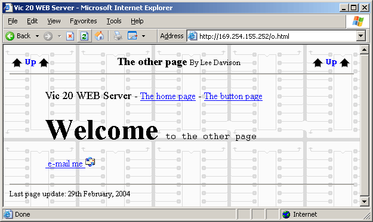
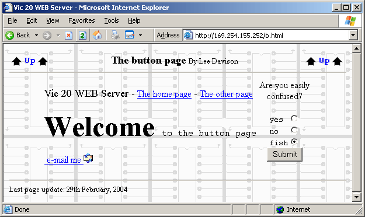
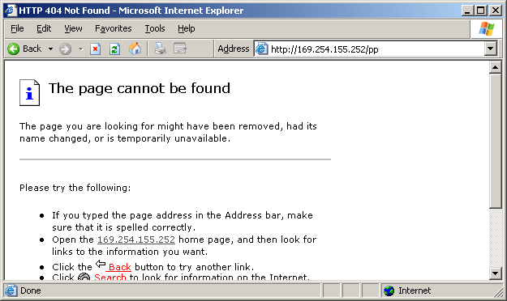
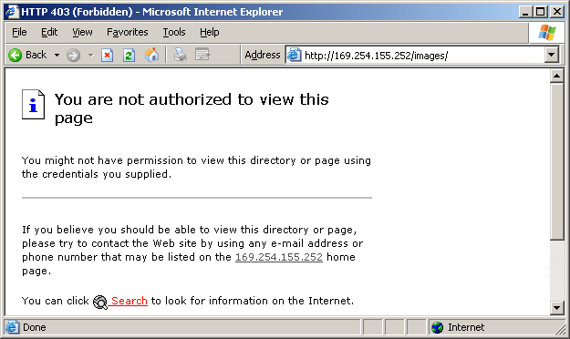

|
|
Embedded pages by Lee Davison |
|
These are the three pages as served by the Vic 20 network driver. While not much to look at they do provide proof that even a computer like the Vic can be used as a web server. With more space available to hold web content than in the EhBASIC web server the pages are a little longer and two new images have been added. /images/back.png is the 127 by 162 pixel monochrome background image and /images/up.gif is the 64 by 20 pixel image used as the "Up" link on these pages.
These images were created by using Internet Explorer to access the Vic 20 as you would any web site, then grabbing the window to the clipboard and then rendering that image as a 256 colour portable network graphic.
 This is the home page and is served as the default root file, "/", and for "/index.html".
 This is the other page which was added so I had another page to access. Much the same as the home page and is served for "/o.html".
 The button page, served for "/b.html". On this page there is a form with four buttons. If 'Submit' is clicked the selection made is sent to the Vic. This selection is not processed in the current version of the software but may be used in future versions.
 If no matching file is found for the HTTP GET request then an error 404 is served. This is a true HTTP 404 response but can easily be changed to whatever you wish by editing the file 404 in the errors directory. This is a global response and is not particular to each directory.
 If the HTTP GET request is for the images or errors directory then an error 403 is served. This is actually the default file, index.html, for each directory and gives the illusion that there is some form of security protecting the filesystem. Like the 404 error response this can easily be changed to whatever you wish by editing the file index.html in the each directory.
There are also three small image files in the images directory and these are served in the same way as the html pages. The ROM file system used presently makes no distinction between file types.
| Last page update: 29th February, 2004. | e-mail me
 |